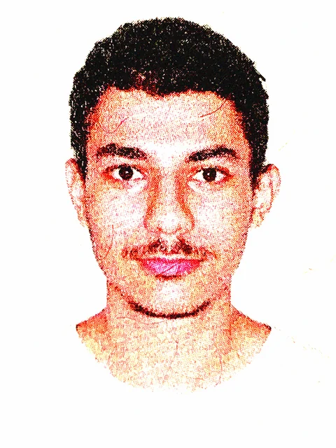

Designer e
relações-públicas.
Estratégias de
comunicação críticas e
funcionais para marcas.

Sobre mim
Bacharel em Relações Públicas pela Unesp, desenvolvo marcas e estratégias de branding e design. Atuo de forma crítica em construção de narrativas e sou redator cultural em portais jornalísticos. Também desenvolvo landing pages e peças gráficas alinhadas à sua marca.
Bacharel em Relações Públicas pela Unesp, desenvolvo marcas e estratégias de branding e design. Atuo de forma crítica em construção de narrativas e sou redator cultural em portais jornalísticos. Também desenvolvo landing pages e peças gráficas alinhadas à sua marca.
Saiba maisServiços
Identidade visual
Logotipo, paleta, tipografia e as peças que levam a marca para o mundo: cartão, papelaria, embalagem e impressos para eventos.
Conteúdo e redes sociais
Planejamento visual e criação de peças gráficas para redes, campanhas e apresentações.
Redação e copywriting
Textos para site, redes, campanhas e apresentações, com a voz da marca definida e mantida em todos eles.
Sites e interfaces
Sites, catálogos e ferramentas web sob medida, com foco em clareza, leveza e desempenho.
Projetos
Identidades visuais, projetos editoriais e interfaces desenvolvidos com intenção e clareza.